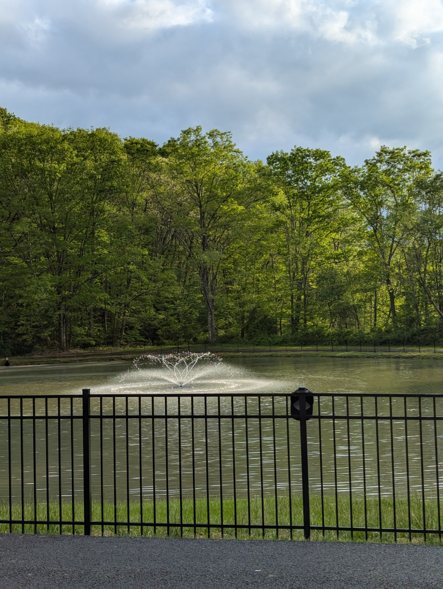

Large pavilion
A spacious covered area for meals, celebrations, and group activities.
Somerset, Pennsylvania
A scenic outdoor event center for seasonal public events, private rentals, family celebrations, and community gatherings.
Welcome
Around the Pond is an outdoor event center that hosts public Halloween and Christmas events and is also available to rent for your own event. The peaceful property offers room to gather, play, eat, and enjoy the outdoors.
Whether you are planning a family celebration, community event, reunion, or another special occasion, Around the Pond provides a flexible and memorable setting.
Property features
A spacious covered area for meals, celebrations, and group activities.
A full kitchen designed to support catered events and food preparation.
Separate men's and women's restrooms are available on the property.
Enjoy bocce courts, swings, open space, and a paved walking path.
A scenic centerpiece with a fountain and a paved path around the pond.
Public Halloween and Christmas experiences bring the property to life.

Summer treat
Looking for an affordable summer treat? Stop by Around the Pond for $1 ice cream every Monday through Thursday, from 11:00 AM to 7:00 PM. Enjoy your ice cream while relaxing by the pond, watching the fountain, or taking a stroll along the paved path.
Plan your visit
1337 Husband Rd
Somerset, PA 15501
For rental availability, event information, or questions, call us directly.